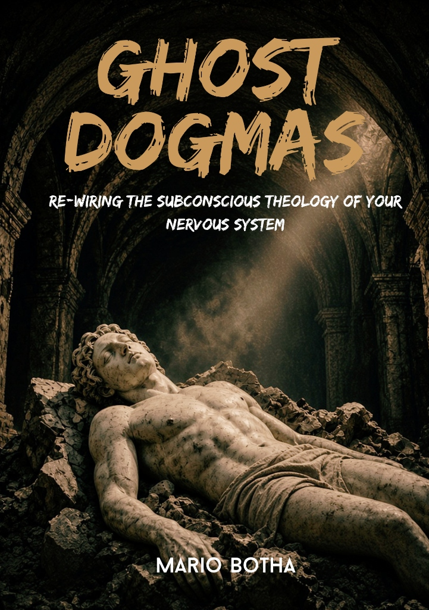

The Companion Score to
Ghost Dogmas
“Bypassing the intellect to unclench what the body is still holding.”
Secondary direct-out for background mobile listening, screen-off streaming, or casting to your high-fidelity sound system.
The intellect deconstructs first.
The nervous system lags behind.
When breaking free from inherited scripts, perfectionism, or internalized guilt, we often win the battle in the mind long before our physiology gets the memo. You can dismantle the logic, read the literature, and discard the theology—yet the stomach still churns, the jaw tightens, and the body stays braced for judgment.
“In clinical psychedelic research and deep somatic work, intentional music is known as 'the hidden therapist'.”
It serves as a non-verbal vehicle that cuts through our cognitive filters, holding the emotional space while the nervous system accesses and discharges stored survival tension.
This companion score is structured around the physiological arc of Ghost Dogmas: leading you from cognitive vigilance into visceral release, and finally grounding you in biological safety.
The Somatic Arc
Four precise movements mapped directly to the neural trajectory of somatic uncoupling: from hyper-vigilance, through confrontation and catharsis, into biological integration.
| Phase | Internal State | The Acoustic Function | Key Selection |
|---|---|---|---|
|
01. Grounding
• Play
|
Over-analysis & hyper-vigilance | Minimalist ambient tones and low-frequency drones to idle the Reticular Activating System and create felt safety. |
Brian Eno & Harold Budd — First Light |
|
02. Confrontation
• Play
|
Somatic bracing & freeze | Driving, circular rhythmic tension that prompts the body to lean into latent friction rather than intellectualizing it. |
Colin Stetson & Sarah Neufeld — The Sun Roars Into View |
|
03. Catharsis
• Play
|
Grief, lineage debt, surrender | Heavy acoustic polyphony and sweeping dynamic crescendos that break open emotional resistance. | Max Richter — On the Nature of Daylight & Ludovico Einaudi — Experience |
|
04. Regulation
• Play
|
Biological integration & peace | Upright, close-mic felted piano and spacious harmonies signaling full parasympathetic resolution. |
Joep Beving — Ab Ovo |
Minimalist ambient tones and low-frequency drones to idle the Reticular Activating System and create felt safety.
Driving, circular rhythmic tension that prompts the body to lean into latent friction rather than intellectualizing it.
Heavy acoustic polyphony and sweeping dynamic crescendos that break open emotional resistance.
Upright, close-mic felted piano and spacious harmonies signaling full parasympathetic resolution.
How to Set the Container
To allow the music to do its therapeutic work, approach it as an intentional practice rather than passive background sound:
Eliminate Distractions
Do not use this as background audio for work, chores, or driving. Dedicate 45 uninterrupted minutes to your physiology.
Use Over-Ear Headphones
The acoustic dynamics, mechanical piano resonance, and low drone frequencies are designed to envelop your sensory field.
Lie Completely Flat
Support your neck, uncross your ankles, and let your abdomen soften. Physical alignment communicates baseline safety to the vagus nerve.
Idle the Inner Narrator
When emotions, memories, or bodily tension surface, resist the impulse to analyze them. Let the music act as the container and allow your breath to carry the discharge.

Take the work from sound into practice.
The music provides the container; the book provides the map. If you landed here via the companion score and want to understand the neurobiological tools, lineage uncoupling, and somatic protocols behind each movement, explore the complete guide.
Available in Print and Digital Formats (PDF & EPUB) • Instant Delivery